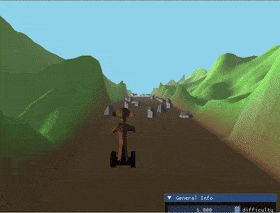
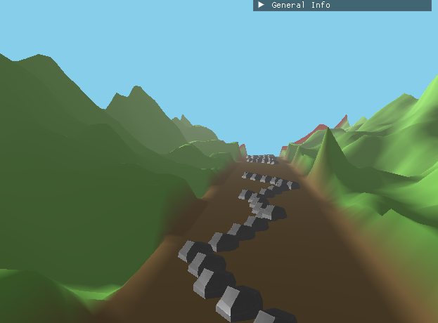
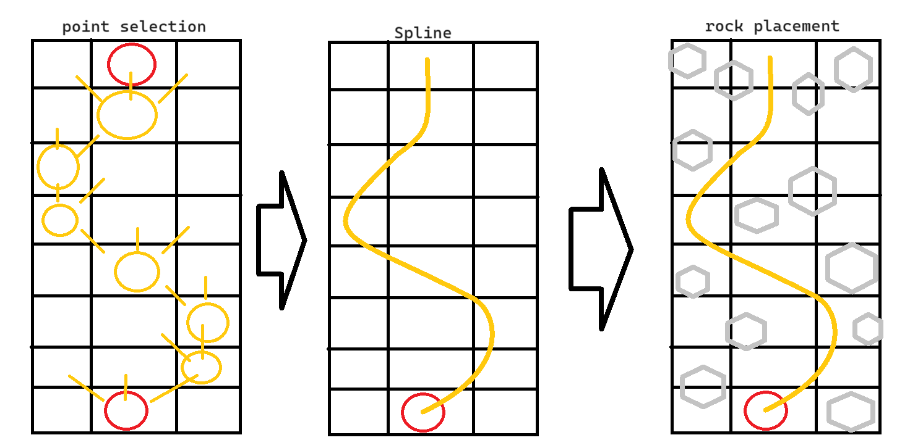
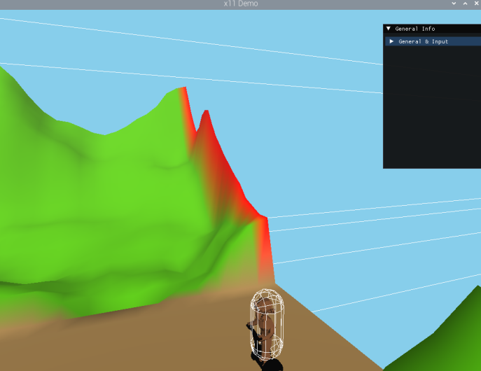
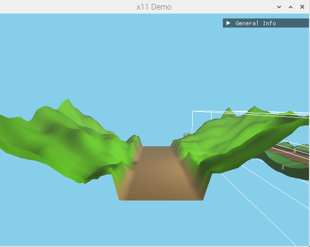
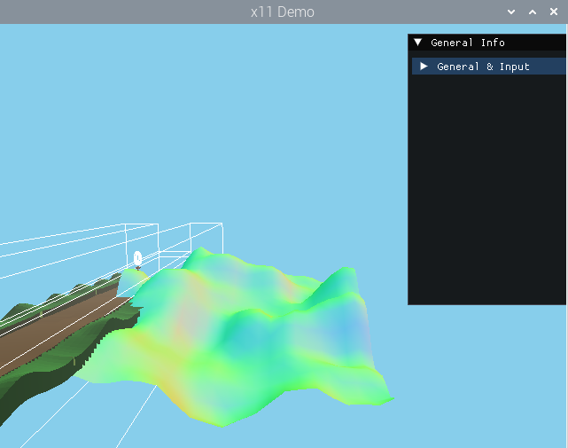
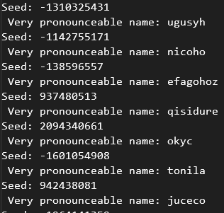

Segway Monkey is an infinite runner for the Raspberry Pi, and my first 3D game. Everything in its world is generated procedurally: the terrain, the zones it is made of, and the path through the rocks.

Procedural generation · Obstacles

Segway Monkey is an infinite runner: a monkey on a segway rides through an endless valley, dodging rocks that come at it faster and faster.
It was my first 3D game and my first game on something other than a PC, built in C++ for a Raspberry Pi in eight weeks.
My goal for the project was to generate the whole world procedurally,
and the most interesting part of that was the path through the rocks.
If I would place rocks randomly, they would sooner or later block the whole road. That's why I decided to place them around a path instead.
Every chunk picks a random lane at regular steps along the road, and a Catmull-Rom spline is drawn through those points.
A Catmull-Rom spline passes through every point you give it, which keeps the path where I want it.
Then I walk along the spline and try positions on both sides of it, at growing distances from the path.
A position is only kept if it isn't too close to a rock that was already placed, so the rocks spread out naturally and the spline itself always stays clear.
The plan I drew beforehand ended up looking exactly like the result.

//Catmull-Rom spline
for (float i = 1; i < static_cast<float>(points.size()) - 2.0f; i++) {
point1 = points[i - 1.0f];
point2 = points[i];
point3 = points[i + 1.0f];
point4 = points[i + 2.0f];
for (float t = 0.0f; t <= 1.0f; t += 0.1f) {
A = (-point1 + 3.0f * point2 - 3.0f * point3 + point4);
B = (2.0f * point1 - 5.0f * point2 + 4.0f * point3 - point4);
C = (-point1 + point3);
D = 2.0f * point2;
vec2 result = (A * powf(t, 3) + B * powf(t, 2) + C * t + D) / 2.0f;
splinePoints.push_back(result);
}
}Chunk::GenerateSpawnPoints() — Chunk.cpp (shortened)
You choose easy, normal or hard in the main menu, which changes how wide the path and the gaps between rocks are. While you play, the game also speeds up, and every fifth rock position, held back at the start, gets switched on bit by bit. The rocks themselves come from a pool that is created once, and are only switched on and added to the physics world when a chunk needs them.
Procedural generation · Terrain


The world is built from zones, and each zone is a random number of chunks. At the start of the game every zone is generated from its own seed, with its own shade of green and a randomly generated, pronounceable name. While you play, the world picks a random zone and feeds its chunks in one by one.
Each chunk starts as a subdivided plane. The middle becomes a flat, brown road, and the rest of the vertices get their height from Perlin noise,
amplified the further they are from the road, so the road always runs through a valley.
The noise continues from one chunk to the next, so a zone's chunks fit together seamlessly.
To make any zone fit after any other, the first and last row of every zone are sampled with a shared seed instead of the zone's own,
so all zones start and end at exactly the same heights.
Getting the lighting right taught me the difference between face normals and vertex normals:
my Phong shading worked on imported models but not on my terrain, until I averaged the face normals into a normal per vertex.
Colouring the terrain by its normals made the problems easy to spot.
if ((j == 0 && mChunkID == 0) || (j == subdivision && mChunkID == mAmountOfChunks)) {
storeSeed = mSeed;
mSeed = 0;
noiseValue = noise2D(static_cast<float>(i), static_cast<float>(0 - mPerlinY));
mSeed = storeSeed;
}
else {
noiseValue = noise2D(static_cast<float>(i), static_cast<float>(j));
}
// ...
//amplify things far away and decrease things close to the road
noiseValue += (amplify * static_cast<float>(maxAmplifacation));Chunk::GenerateMesh() — Chunk.cpp (shortened)


Only three chunks exist in the world at a time. Instead of deleting a chunk once the player has passed it and creating a new one, the world manager moves the next chunk of the current zone to the back of the line, so nothing is created or destroyed while you play. Generating all zones up front at the start of the game, instead of while playing, was a lecturer's suggestion. With all of this running, the game held around 90 fps at an average window size.
Rendering · Raspberry Pi
Everything was new in this project: the Raspberry Pi, OpenGL, 3D maths and the Bullet physics library.
I wrote the game in Visual Studio and cross-compiled it to the Pi, which renders with OpenGL ES 3.1 through EGL and an X11 window.
I wrote the shaders, with Phong lighting based on a tutorial on the models, diffuse-only lighting on the terrain so it doesn't look shiny, and distance fog.
Bullet handles the player and the rocks. The player moves by setting its velocity rather than applying forces, which a classmate suggested
once I realised my movement depended on the frame rate. The game has a main menu, pause and game over screen, each as its own game state class.
Reflection
Before writing the world generation I drew flowcharts for it, and changed them several times: moving chunks back instead of recreating them was a change on paper, not in code. This was the first project where I planned this much, and it is a habit I have kept since.
With so many new things at once, almost everything took longer than planned. Shadow maps, instancing and moving obstacles were all cut, and I kept the road flat so the player could drive on simple box colliders instead of a collision mesh of the terrain. Cutting early is what made it possible to finish a game I was proud of.